Common Problems
YouTube Top K
Scaling Reads
Scaling Writes
Understanding the Problem
Top-K is a classic system design problem which has a ton (!) of different variants. As such, each interview can be a little unique. In this writeup, we'll walk through the problem of designing a top-K system for YouTube video views. In our deep dives, we'll talk through some of the variants and alternatives that interviewers might guide you toward.
Because top-K questions are so flexible, many interviewers like to change the requirements or shift the scope to test your ability to adapt. Make sure you're asking targeted questions and following the interviewer's lead. Some interviewers will be poor and may have a specific solution in mind. In these cases, you'll want to adjust rather than trying to talk them out of it.
Let's assume we have a very large stream of views on YouTube (our stream is a firehose of VideoIDs). At any given moment we'd like to be able to query, precisely, the top K most viewed videos for the last 1 hour, 1 day, 1 month, and all time.
Our interviewer might give us some quantities to help us understand the scale of the system: Youtube Shorts had 70 billion views per day and approximately 1 hour of Youtube content is uploaded every second. Big!
Functional Requirements
Requirements clarifications are important for all system design problems, but in top-K questions in particular small changes to the requirements can have dramatic impacts on the design. We need to nail down the contract we have with our clients: what do they expect our system to be able to do?
This might seem obvious: they want to get the top K videos! But digging in here reveals some interesting wrinkles that your interviewer will be expecting you to discover.
First, we need to clarify what time period or windows the system needs to support. We could conceivably have a system which is only looking to tabulate the most viewed videos of all time. It wouldn't be very interesting (those don't change very often!), but it is possible. Generally though, this problem becomes more interesting when we need to include some windows, and we'll assume that our clients want to query the top K videos for the last 1 hour, 1 day, 1 month, and all time.
Next, to drive the discussion forward, it's helpful to talk a little bit about windowing. When we talk about the last 1 hour, what exactly does that mean? There's two primary types of windows that are used in streaming systems: sliding windows and tumbling windows.
- With sliding windows, the last 1 hour is the time between [T-1 hour] and [T]. If our current time is 10:06, the last 1 hour is the time between 9:06 and 10:06.
- With tumbling windows the window for the last hour is the last full hour that starts and ends on an hour boundary. So the time between [Floor(T - 1 hour, 'hour')] and [Floor(T, 'hour')]. If our current time is 10:06, the last 1 hour is the time between 9:00 and 10:00.
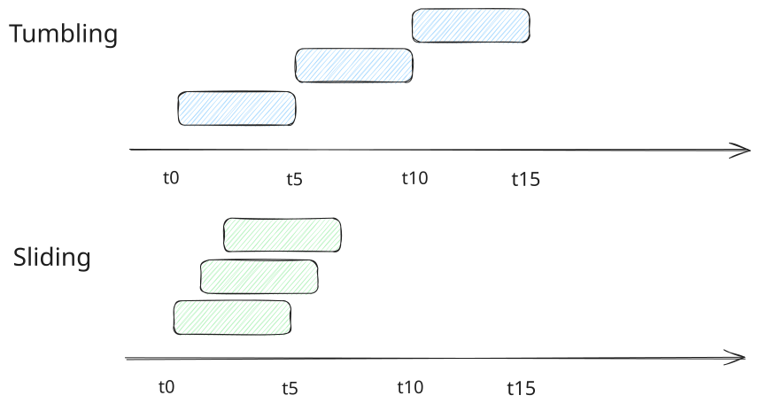
Window Types
For this problem, we're going to propose to our interviewer that we'll use tumbling windows and give them a moment to object. This shows our foresight (we're anticipating ambiguity in the requirements!) and tumbling windows are easier to handle than sliding windows, making our job easy for now.
Next, it's useful for us to clarify the time periods we're going to support. Designing a system which supports arbitrary time periods (meaning I can query the top K videos for the month of June 2024 in October 2025) means we're not going to be able to precompute much of anything and need to support general time series queries. But that's rarely what interviewers are after. So in this problem, we're going to explicitly propose this as a below the line requirement.
Finally, it's useful to put some constraints on the size of the top K. In any system where your result set might grow unbounded, having practical limits on your clients is a good idea. For almost all applications of top-K, 1k is a reasonable limit. If you want to query the top 1M videos you're likely actually looking for the full dataset which can be provided by another system.
Here's where we net out for our functional requirements:
Core Requirements
- Clients should be able to query the top K videos for all-time (up to a max of 1k results).
- Clients should be able to query tumbling windows of 1 {hour, day, month} and all-time (up to a max of 1k results).
Below the line (out of scope):
- Arbitrary time periods.
- Arbitrary starting/ending points (we'll assume all queries are looking back from the current moment).

Non-Functional Requirements
Similar to our functional requirements, our non-functional requirements are load bearing for this problem.
One key question is how the top K calculation is actually carried out. Views from YouTube videos are events that happen at a real point in time (like 09:59:55) but in a distributed system there are sometimes delays in transmitting and processing these events. Maybe that view event doesn't arrive to our system until 10:00:55. How long should we wait for these events to be processed? We're going to give ourselves a generous 1 minute buffer here between when a view happens and when it needs to be tabulated and included in our top K calculation.
Another question for us to answer is whether we'll tolerate approximation in results. For large-scale systems, it's common to trade off some precision for performance. Approximate systems can often be more efficient, but are more complex. We're going to start by assuming our system should be precise and tell our interviewer we'll come back to this later in the deep dives if we have time (we cover it in our deep dives below).
Data Structures for Big Data is a great resource for understanding various approximation techniques that can be used to scale to massive data sizes.
Next, we need to think about the expectations of our clients. What should be the latency they'll expect on calls to our system? Let's get ambitious here and aim for our system to respond within 10's of milliseconds. If we can carefully precompute results, serving them out of a cache is entirely possible and should allow us to achieve this latency.
Finally, we'll make some nods to our scaling requirements. We know this system is going to be big, but the exact size matters a lot. Calculating the top K songs played by a single user (e.g. for Spotify) is done trivially on a single CPU. But views on YouTube are going to be massive — we need to have an idea of how many videos are going to be watched and how many views are going to be processed per second so we know how to scale our system.
Ok, that's enough discussion for this, here's our non-functional requirements:
Core Requirements
- We'll tolerate at most 1 min delay between when a view occurs and when it should be tabulated.
- Our results must be precise, so we should not approximate.
- We should return results within 10's of milliseconds.
- Our system should be able to handle a massive number (TBD - cover this later) of views per second.
- We should support a massive number (TBD - cover this later) of videos.
Having quantities on your non-functional requirements will help you make decisions during your design. Note here that a system returning within 10's of milliseconds eliminates many candidates from the solution space - we'll need to favor precomputation.
For quantities that are important to our design but that we can't estimate out of hand, we'll reserve some time to do so.
And with some brief notes that we're writing as we're discussing with the interviewer, here's how it might look on your whiteboard:
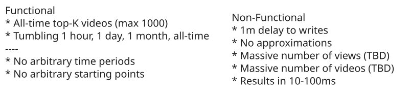
Requirements
Let's keep going!
The Set Up
Planning the Approach
Based on our requirements, we're going to sketch out a quick plan for your interviewer. Generally speaking, we'll start with a basic, suboptimal system that solves for our requirements. We'll start by building a system which can calculate the top K videos for all-time. Then we'll extend the system to support time windows.
Once we have a basic system, we'll look for ways to optimize it. We'll earmark bottlenecks along the way that we'll address in our deep dives. Finally, if we have time, we'll try to solve some of the stretch requirements we talked about in the requirements section like making our system more efficient with approximations. Let's get started!
Defining the Core Entities
In this problem, we have some basic entities we're going to work with to build our API:
- Video: The video being viewed.
- View: The view event that happened.
- Time Window: The time window associated with the query "all time", "last hour", "last day", "last month".
There's really not a lot of complexity to the interface for this problem so we're not going to spend any more time here and keep going.
API or System Interface
Our API guides the rest of the interview, but in this case it's really basic too! We simply need an API to retrieve the top K videos.
GET /views/top-k?window={WINDOW}&k={K} -> { videoId: string, views: number }[]Normally, for variable length result sets like this we might want to consider pagination. For this problem, we're explicitly limiting responses to no more than 1k results, so pagination is less of a concern. We already let clients tell us how many results they want.
That's it. We're not going to dawdle here and keep moving on to the meat of the interview.
Especially for more senior candidates, it's important to focus your efforts on the "interesting" aspects of the interview. Spending too much time on obvious elements both deprives you of time for the more interesting parts of the interview but also signals to the interviewer that you may not be able to distinguish more complex pieces from trivial ones: a critical skill for senior engineers.
High-Level Design
To get started, we need to build a basic system which satisfies our functional requirements but might make some sacrifices in our non-functional requirements. It's far better for us to start with a working system and optimize it, than to begin with an "optimal" system and try to make it work. (This pattern applies to real world engineering as well!)
If you have a lot of experience, go ahead and skip steps where you feel comfortable. But if you're new to the game taking things step-by-step will keep you from getting lost.
It's important that we're noting to our interviewer the bottlenecks that are appearing as we go about our design. You don't want your interviewer to think you've missed something obvious even as you're deliberately carving a simpler path to begin with.
1) Clients should be able to query the top K videos for all-time (up to a max of 1k results).
For keeping track of our all-time top K videos, we need to establish some counters for each video and have a way to query the top videos from a list. Easy enough.
Rather than building a system which accepts a "view" API call, we're going to assume there exists a Kafka stream of view events from which we can consume. Basically: some other system in YouTube is responsible for showing videos to users and when they do they record it to this topic.
This is a reasonable assumption for this system and allows us to skip a lot of boilerplate elements that we might otherwise need to add to our diagram, so we can spend more time on the good stuff! We'll assume this ViewEvent topic is partitioned by video ID and we'll start with a simple consumer service which pulls these view events and updates a Postgres database with the results.
So:
- The view consumer retrieves a view event from the Kafka stream.
- The view consumer updates the counter for the video ID in the Postgres database.
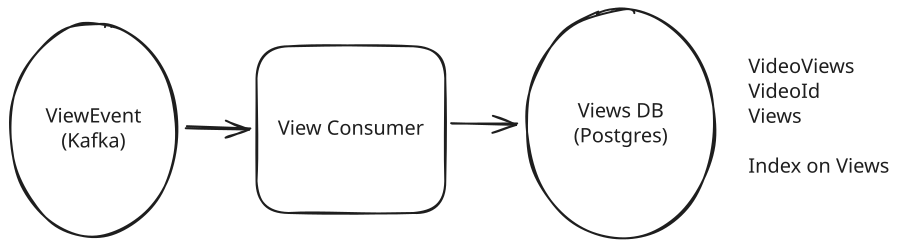
Basic View Event Consumer
You'll definitely want to acknowledge to your interviewer the elephant in the room here: this is a lot of writes to a single Postgres instance! But remember, we're going to build this system up incrementally.
Next we need a way for users to query for the top K videos. Since our postgres database already has all of the values, we can simply add an index to the table and query from it. A simple top-K service sitting behind a load balancer can handle this.
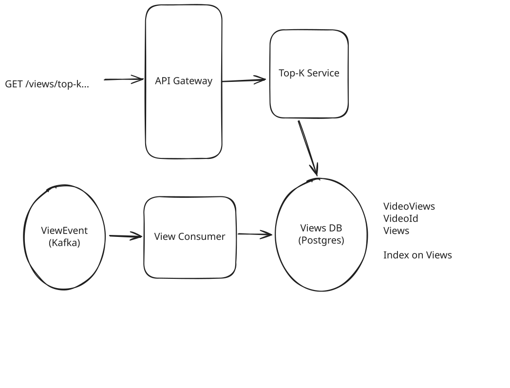
Basic All-Time Top K
Since we're using Postgres, retrieving the data is a simple SQL query.
SELECT "videoId", "views",
FROM VideoViews
ORDER BY "views" DESC LIMIT k;This isn't necessarily something we'd write down in an interview, but it's good to keep in mind. Because we can create an index on the views column, the query can be very efficient. The query planner will go grab our views index which is basically a sorted list of video IDs by the number of views. It'll then grab the top K videos from that list and return them to the client. This is effectively an O(k) operation!
Especially for data-intensive design questions, having an intuitive idea of how data is moving around your system is the key to giving the impression you know what you're talking about. Interviewers will probe you with questions like "What happens when we have billions of videos?" with the expectation that you'll understand how this effects the data flow of your system. While you don't necessarily need to be writing SQL statements, you do need to have an idea of what is happening under the covers!
The cost here is that on every write, we need to update the views index. SQL databases are fairly complex, but you can imagine this taking the write operations from a simple O(1) append to an O(log n) update to the index.
That's ok for now. Lots to optimize here, but we're going to acknowledge the problem and keep moving.
2) Clients should be able to query tumbling windows of 1 {hour, day, month} and all-time (up to a max of 1k results).
Next, we need to extend our system to support time window queries like last hour, last day, last month, etc. Again, we're going to go with a simple (even naive) solution first and then use it as a springboard to guide us to a more optimal solution.
First, let's adjust our table schema to include a timestamp column. We can set this column to be the timestamp of the hour of the view event. We'll have one row for each video that has been viewed at least once in a given hour. This necessarily means we'll have many rows for videos that have been viewed multiple times over several hours.
The number of writes we're making isn't changing because we're still triggering 1 write for every view event that happens. But because we're now having multiple rows per video, the number of rows we're storing is blowing up. We'll have to come back to this later.
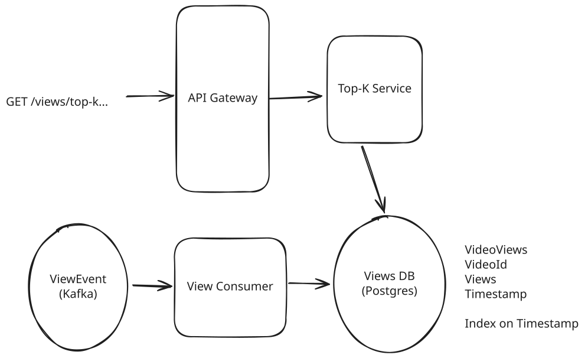
Basic Time Window Top K
On the read side, we'll need to update our top-K service to be able to handle the time window inputs. Because of the powerful nature of SQL, this is "easy": we can just adjust our query. We can also add an index on the timestamp column to further improve performance of the query. Unfortunately, the execution of this query is going to be a lot less efficient.
SELECT "videoId", SUM("views") as "views",
FROM VideoViews
WHERE "timestamp" >= {windowStart} AND "timestamp" <= {windowEnd}
GROUP BY "videoId"
ORDER BY SUM("views") DESC LIMIT {k};The actual execution of this query is going to vary based on statistics and the query optimizer, but we're not going to be able to avoid some scans here. Scans are when the database needs to read every single row in a given segment in order to satisfy a query.
Spoiler alert: processing billions of rows takes a while. We'll earmark this for our interviewer so they know we see the problem and ensure we come back to this as part of our deep dives.
But now we have a working a system! Let's start to chip away at the problems.
Potential Deep Dives
1) How can we cut down on the number of queries to the database?
The lowest-hanging problem we have is that we make a query to the database for every request that comes in for top K. Per our latest updates, the query for top K is resource intensive! If we have millions of requests for top K coming to our service, we're going to be in trouble.
But remember: our non-functional requirements grant us a 1 minute grace period from when a video view event happens and when it needs to be tabulated in our results. This gives us a great opportunity to utilize caching or precomputation, which should be on top of your mind when thinking about scaling reads.
Pattern: Scaling Reads
Caching and precomputation are some of the most common strategies for scaling reads, but it's helpful to understand the full toolbox when approaching new system design problems.
Approach
One of the more elegant approaches for us is to simply put a cache by our top-K service. We can use any distributed cache like Redis or Memcached. If the request is in the cache, we can return it immediately. If the request is not in the cache, we can compute it, store it in the cache (with a TTL of a couple hours), and return it.
We'll store cache entries with a key of top-k:{window}:{truncated_timestamp} and a value of the top K videos for that window. To make things easy, we can cache the entire response of the top-K service.
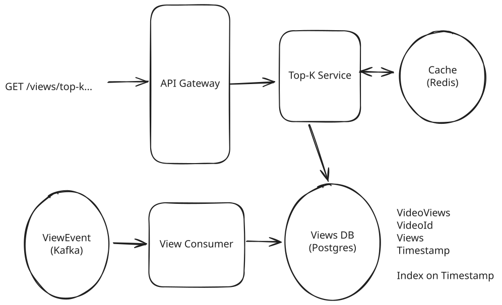
Cache Top-K
For cache hits (the overwhelming majority of requests), we can return our results well inside of the 10's of milliseconds requirement we set. Most caches will return results in the sub-millisecond range.
Challenges
The biggest problem with this approach is when the cache expires we (a) suddenly have a flood of requests to the database, and (b) they're all going to break our SLA since our top K request takes longer than 10's of milliseconds. While we can partially solve (a) by coalescing requests (i.e. only allowing one request per server a given time window to the database, have all the other requests wait for that response), we can't solve (b) without a more sophisticated approach.
Approach
Another approach we can utilize is to add a cron to our system which, on fixed intervals, will precompute the top K for each time window and warms our cache in the same way. Then, requests that come to our top-K service are only reading from the cache, never querying the database.
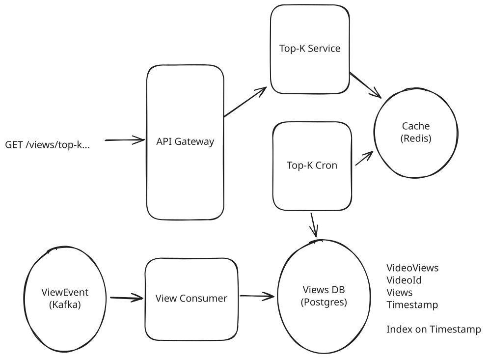
Cron Top-K
This solves the problem of (b) in our "good" solution where we break our SLA around window boundaries when our cache expires. Because our cron job is running at fixed intervals, it has time to "get ahead" of the expirations that would have happened.
Challenges
The biggest problem with this approach is that it adds some operational complexity. What happens if the cron job fails? How do we monitor to ensure we're not very far behind? In the grander scheme of things, these are not the most important aspects of this particular design (we have a lot more to cover) so most interviewers aren't going to ask for additional details here.
We can retain the cache entries for a couple hours to solve for the case where our precomputation job is late. Then the top-k service can serve stale data for a short period of time rather than nothing.
2) How can we handle the massive number of writes to the database?
We're expecting to write a lot to the database. Let's quickly check-in on how much we're writing in order to decide whether this is going to work.
In most interviews, we can assume "big" for a lot of quantities and avoid a back-of-the-envelope estimation. As general guidance, the deeper the infra challenge, the more likely you are to encounter an interviewer who wants you to do some estimation. Regardless, the same rule applies for any problem: estimate when you need it and when it might influence your design. And here we really do need it!
The calculation for our throughput is simple:
70B views/day / (100k seconds/day) = 700k tpsWoo, that's a lot. While modern RDMSs can handle an impressive 10k+ writes per second per node under the right circumstances, we're still well beyond that.
While we're here, it's probably useful for us to figure out how much storage we're going to need:
Videos/Day = 1 hour content/second / (6 minutes content/video) * (100k seconds/day) = 1M videos/day
Total Videos = 1M videos/day * 365 days/year * 10 years = 3.6B videosWith that let's estimate how big a naive table of IDs and counts would be:
Naive Storage = 4B videos * (8 bytes/ID + 8 bytes/count) = 64 GBThis 64 GB number will be a useful number to keep in mind. Every time we need to keep a set of views for all videos, we'll need at least 64 GB of storage.
Note I'm using 100k seconds/day to simplify the math instead of the more exact 86,400 seconds/day. Remember, this is an estimate and anything you can do to make it easier to compute is a good thing. Don't get hung up plugging numbers into a calculator.
The goal of estimations isn't actually to see if you can do mental math (so don't be afraid of fudging the numbers). Your reflections on the implications of the quantities on your design, like which architectures are on or off the table as a result, is often the most important factor.
Sharding Ingestion
To handle the write throughput, let's start with the big hammer: sharding. Recall earlier that our ViewEvent topic is already partitioned by video ID. This gives us a nice "seam" to split our data throughout the pipeline.
Pattern: Scaling Writes
Sharding, partitioning, and batching are your first line of defense when it comes to scaling writes. The Scaling Writes pattern describes repeatable strategies you can use across problems where write volume is high.
We can scale our view consumers horizontally by spinning up multiple instances to read from each partition of the ViewEvent topic. We'll shard our database by the same scheme, so that each shard has a partial view of only a subset of videos. Each View consumer will be writing to its own shard of the database.
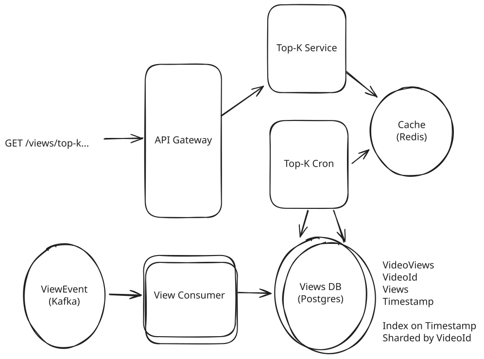
Sharded Top-K
Easy enough.
- When a view comes in, it is assigned to a shard based on the video ID.
- The view consumer for that partition reads the view event from the Kafka topic and fires off a write to the database for that shard.
If we wanted to bring the throughput for the database down to around 10k TPS, we'd need to shard our database into 70 instances. This is still way too high for this simple use-case, but it's a start.
By sharding the database, we no longer get the benefit of our single SQL query to get the top K. Instead, we need to query each shard and merge the results (either manually or by using something like Citus).
Fortunately, this is an easy enough operation. By grabbing the top K from each shard, we're mathematically guaranteed to have in our final list the "global" top K. So our top K cron is updated to make one call for each shard and merge the results.
Batching Ingestion
Even with sharding, having 70 database instances is a bit wasteful for this simple functionality. What can we do next?
One insight we can use is that a lot of our views are happening on a small number of videos. While we may have 3.6B videos, in any given minute a lot of those views are going to be on a small number of popular Mr. Beast and Taylor Swift videos. Instead of making a write to the database for each view, we can batch up the writes for each video and flush these batches periodically to the database.
A great option for doing this is Flink. Flink is a stream processing framework that gives us a bunch of convenient tools for handling batching and aggregation in streaming applications. Flink handles checkpoint and recovery for us, so we don't have to worry about losing data or struggling with itchy problems like event delays.
For this Flink application, we'll use BoundedOutOfOrdernessWatermarkStrategy to handle late events: basically we'll tell Flink that we're ok waiting up to some time (probably 30 seconds here, < 1 minute) for late events to arrive. We'll also use a tumbling window of 1 hour to aggregate the views for each video.
Since Flink is reading from Kafka, if a given host fails or goes down, Flink can rewind to the checkpoint offset in the Kafka topic and resume processing from there.
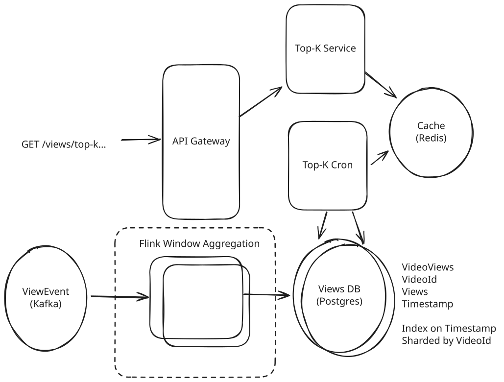
Flink Batching
Now, our Flink job is accepting individual view events and outputting sums of views per video on a 1 hour interval.
Because we're batching, instead of a steady stream of writes we now have a big lump of writes every hour. As long as these are spread across shards, this is acceptable and it can even be more optimal, as databases handle bulk data much more efficiently than individual writes.
We should also expect that the number of writes will be smaller than before (by anything from 2-100x) because we're summing many views that could have happened in one hour for a singular video.
All told, by batching, we can probably bring the number of shards down in the 5-10 range. Still not great, but manageable. Let's keep going.
3) How do we optimize our top K queries?
We've sped up our happy path for reads. When we read from our cache, response are super fast.
But when we don't have a cache entry (either because it's expired or because we are in the process of precomputing it), we're still making calls to the database and these windowed calls are very inefficient.
Let's imagine the steps the database needs to perform for a top-K query for a 5 hour interval (we support 1 hour or 1 day, but 5 hours is easier to draw). We have two steps we need to perform: first, we need to sum up all the views for each video in the window. Then we need to take that aggregated view count and pull the top K out of it.
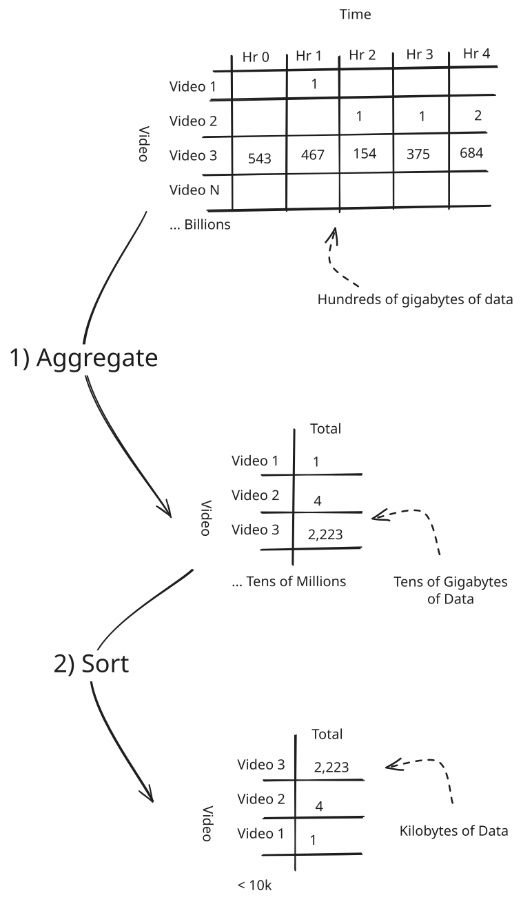
Processing Top-K Queries
The biggest issue with this query is we end up processing hundreds of gigabytes of data. Whenever you're processing hundreds of gigabytes on a machine, you're going to be working with time in minutes or hours, not seconds! While we can move this outside of an RDBMS onto something more scalable like Spark, this is still a very inefficient operation — we get some benefit from parallelization, but we're paying the price with excessive capacity.
While Spark and Hadoop are great tools for scaling computation, they are still subject to the same constraints of any other compute platform. Parallelizing work can make it faster, but this parallelization comes with increased cost and capacity requirements. At senior+ levels, interviewers are looking for you to simplify the problem not just throw hardware at it!
Note here there is a discrepancy between how you would likely build this feature internally to these companies (I'll just create an ETL job that runs every X on our data warehouse, publishes to a cache, and reads that!) and how you're expected to design the system for an interview.
We have some options here.
Approach
One approach that will save us a lot of processsing time is aggregating as a coarser granularity. In addition to keeping track of the views for each video for each hour, we can keep track of the views for each day. Then, when we need to query for larger windows (like a month), we can sum up the daily aggregates rather than the hour-by-hour aggregates.
To pull this off there's lots of options. One is to periodically query the database, aggregate the total number of views for the higher granularity (e.g. group the hour views by day, or the day views by month), and store them to a new table in the database. Another solution is for us to simply add additional tumbling windows to our Flink jobs which output to these new tables. Instead of only outputting to the database every hour, we'll have Flink retain state for the larger windows as well.
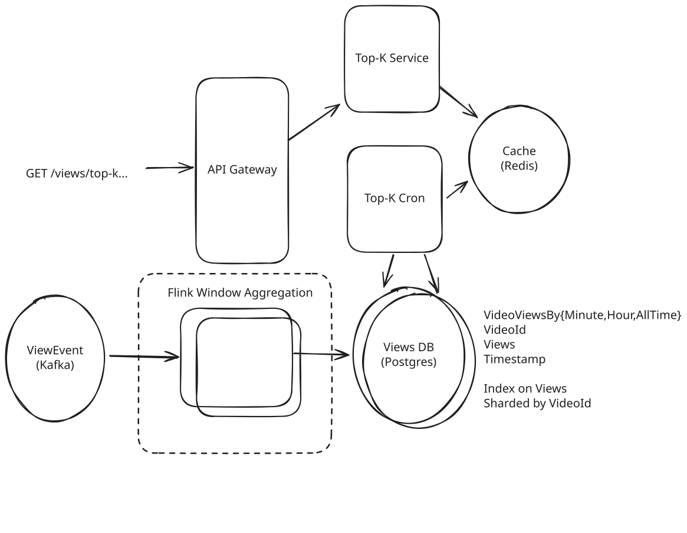
More Flink Granularities
When it comes time to query, our Top-K service can simply query the higher granularity tables when the window size is larger.
Challenges
Having a cron read and write to our database implies additional load that we're already struggling to sustain. The queries to sum up hour to days, or days to months are still expensive and slow (but maybe not as slow as aggregating 24 hours * 30 days = 720 records for each video!). In the worst case, our top-K queries for the last delay are delayed by however long it takes to (1) write the hour-grain aggregates, (2) kick off a cron, (3) aggregate those hours together with the other hours in that {day, month}, (4) write those to the database, and (5) read them back again.
You might make the case to your interviewer that this latency is acceptable given (a) the higher granularity top-K queries change a lot less frequently, and (b) the expectations of freshness from users are lower. But we can do better.
Approach
Instead of maintaining aggregates for arbitrary partitions of time, we can maintain aggregates for each window. As we discussed earlier, if we have a VideoViewsLastHour table with an index on the views column, our queries are very fast! In this case, all we need to do is have our top K cron read the top K videos directly from our index.
To make this work, we'll need a table which has the current aggregate for each video for each window.
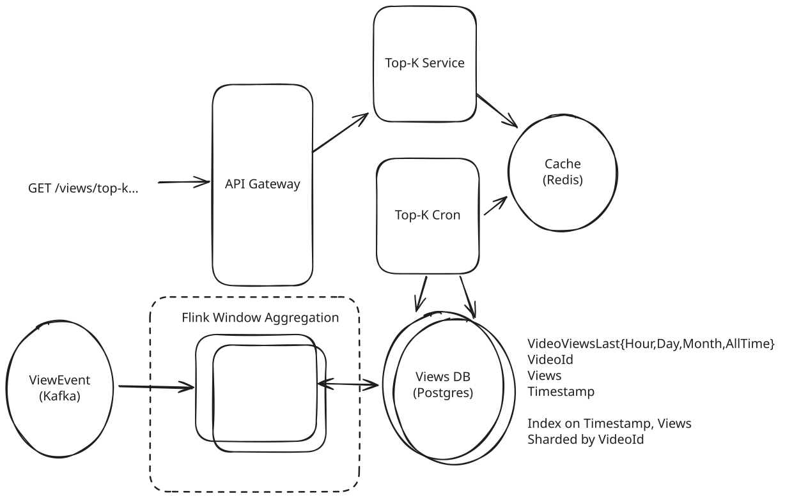
Full Aggregates for Each Window
To tie this all together, for the video views in the last month:
- Our Flink jobs will continue to aggregate, at hour grain, the views for each video.
- Whenever a new hour has passed and we're ready to write to our database, we'll make updates to our window tables (e.g. VideoViewsLastHour) rather than writing to the hour-grain VideoViews table.
Challenges
This approach moves some complexity from the top-K reads to the writes. We now have to write to 4 tables instead of just 1.
There are many ways to optimize these bulk operations in Postgres. We can use unlogged tables to avoid writing to the WAL. We can also delay fsync to the end of the transaction to further improve performance. Choosing the right batch size will be important here as well. There are a lot of of "empirical" optimizations we can do here but that likely won't fall inside the scope of a system design interview in part because they depend on the actual data and hardware we're working with. Benchmarks are key!
Approach
For completeness, a final approach would be to keep the aggregates in Flink, using Flink's native distributed state management instead of reading and writing to the Views DB. We can use an external state storage, like RocksDB to move state off the heap onto disk so that it scales to the large size of data we're dealing with.
By maintaining state inside of our Flink jobs, we can get rid of the Postgres database entirely. We can also have the top-K calculations performed natively in Flink, meaning we write the output directly to our Cache at the conclusion of every minute rather than requiring a top-K cron.
Our Flink job would look something like this:
public final class VideoTopKJob {
private static final int TOP_K = 100;
private static final List<WindowSpec> WINDOWS = List.of(
new WindowSpec("last_hour", java.time.Duration.ofHours(1)),
new WindowSpec("last_day", java.time.Duration.ofDays(1)),
new WindowSpec("last_month", java.time.Duration.ofDays(30))
);
private VideoTopKJob() {
}
public static void main(String[] args) throws Exception {
StreamExecutionEnvironment env = StreamExecutionEnvironment.getExecutionEnvironment();
// ... setup Flink job
KafkaSource<VideoViewEvent> source = KafkaSource.<VideoViewEvent>builder()
// ...
DataStream<VideoViewEvent> events = env.fromSource(
source,
WatermarkStrategy.<VideoViewEvent>forBoundedOutOfOrderness(java.time.Duration.ofSeconds(30))
.withTimestampAssigner((event, timestamp) -> event.eventTime()),
"video-views-source"
);
DataStream<VideoWindowCount> windowCounts = events
.name("video-views-with-watermarks")
.keyBy(VideoViewEvent::videoId)
.process(new RollingWindowAggregator(WINDOWS))
.name("rolling-window-aggregator");
windowCounts
.keyBy(VideoWindowCount::window)
.process(new TopKAggregator(TOP_K))
.name("top-k-per-window")
.addSink(new RedisSortedSetSink(/* */)
.name("write-top-k-to-cache");
env.execute("Video Top-K Sliding Window");
}
private static final class RollingWindowAggregator extends KeyedProcessFunction<String, VideoViewEvent, VideoWindowCount> {
// ...
}
private static final class TopKAggregator extends KeyedProcessFunction<String, VideoWindowCount, TopKResult> {
// ...
}
private static final class RedisSortedSetSink extends RichSinkFunction<TopKResult> {
// ...
}
}Because our Flink jobs are reading from Kafka, you can think of them like reading off a tape recorder. If things fail, we can always rewind our Kafka offsets to the last good checkpoint and replay processing from there.
The rolling window aggregator is keeping, in memory, the count of views for each window for each video. When the window is complete, it emits a VideoWindowCount object which contains the window and the count of views for each video in that window.
The top-k aggregator is keeping, in memory (likely using a heap), the top K videos for a given window. It receives the VideoWindowCounts and emits a TopKResult object which contains the window and the top K videos for that window.
Finally, that TopKResult is written to Redis using a sink.
Our net design is simplified:
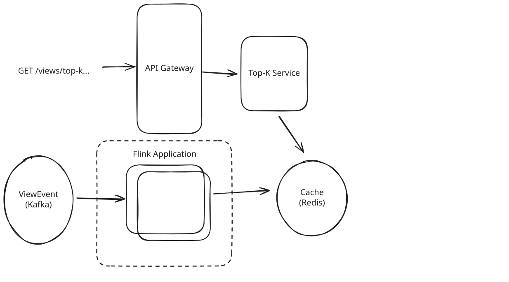
Full Flink Solution
In an interview setting, you're probably talking about each of these steps verbally. It would be cumbersome for you to write out the code for this and unusual, unless you were specifically interviewing for a data engineering heavy role.
Challenges
I think this approach is pretty elegant, but it relies heavily on knowledge of Flink which is not something every interviewer (or every candidate!) will be familiar with. In certain cases, you might get pushback from your interviewer to "do it without Flink!" or "explain how each of the pieces work at a lower level." Some of these challenges are surmountable, but in practice this quickly turns into a coding interview or a low-level design challenge vs a high-level system design interview.
All said, here for completeness but generally would not recommend for a system design interview!
4) What if we need to support sliding windows?
So far we've been talking about tumbling windows, which are easier to work with (that's why we chose to work with them!). But what happens if we need to support sliding windows? Remember for sliding windows, this means if we query the last hour at 10:06, we want to get the views for the time between 9:06 and 10:06.
Let's build on our Postgres-based window aggregates solution to support sliding windows.
We still want a table which has the current aggregate for each video for each window. Getting aggregates for each window with a sliding window is a bit more complicated, but it's not hard if we remember what's happening behind the scenes. To keep track of the last hour of views for a video, when we have a new batch of views for the most recent minute we can increase by the views that have come in during that minute and decrease by the views that happened 60 minutes ago.
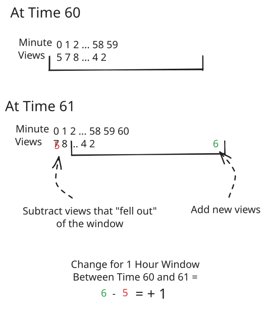
Sliding Window
To tie this all together, for the video views in the last hour:
- Our Flink jobs aggregate, at a minute grain, the views for each video.
- Whenever a new minute has passed and we're ready to write to our database, we'll...
- Read all of the views that happened in the minute exactly T-60 minutes ago. Call this our decrement.
- Write all of the views that happened in the last minute (our increment) to VideoViews.
- Update the VideoViewsLastHour table with difference between the increment and decrement.
We'll do this for each of our windows (last hour, last day, last month). For the all-time window, the decrement is always 0!
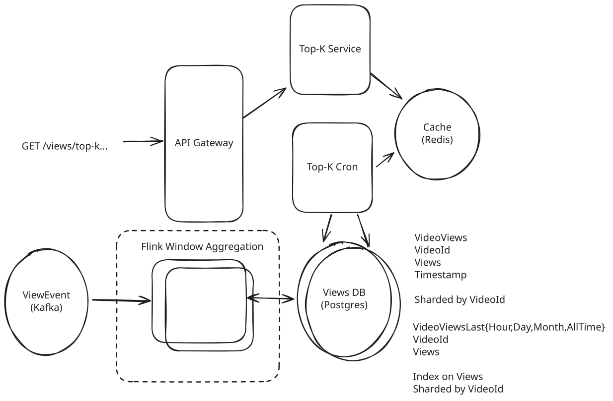
Full Aggregates for Each Window
This is even more complex than the tumbling window solution. Instead of only inserting records into our database, we're now reading them (to get our decrements) and doing updates. This magnifies the database challenges we talked about earlier.
Another challenge we now have is that the VideoViews table is growing a lot. We need to keep minute-grained data around for a whole month so we can decrement it when it expires out of the "last month" window. From a product perspective, this is kind of wasteful!
One mature path is to propose an alternative to our interviewer: how about we support sliding windows for the "last hour" and tumbling windows for the "last day" and "last month"? This matches the product experience: we don't expect the top videos for the month to change quickly, but we do for the last hour.
Another option here is to use a different consumer group to process Kafka events on a lag. One consumer group can increment our counters, and the other consumer group is responsible for decrementing them after they've expired. This means we need to have 1 month+ of retention on our Kafka topic, but we don't need to keep minute-grained data around anymore and we can take advantage of the log-based nature and performance of Kafka.
Some might suggest we could use Flink's native sliding windows. Unfortunately, sliding windows with a 1 minute slide multiplies the memory by 60 * 24 * 30 = 43,200x! This is impractical.
5) Can we make use of approximations to improve performance?
So far we've been making our job a bit easier by abusing the "precise" requirements of our product. We're forced to provide the absolute correct answer.
But most of the top-K results aren't going to come down to small differences of dozens of views: the top videos will likely differ by a large factor, thousands of views. And product features built on top-K are frequently about trends and direction rather than financial leaderboards. If our users can accept some risk of fuzziness, we can drastically improve the efficiency of our system.
To do this, we'll use a data structure/approach called Count-Min Sketch (CMS). CMS allows us to estimate the number of times an items has been added to the "sketch", the underlying data structure, with substantially less memory required than the hundred-gigabyte full hash table we'd need to maintain otherwise (think: hundreds of megabytes). To do this, CMS uses a set of hash functions to map items to a 2d array of counters. It forgets the actual items, but remembers how many times they've been seen by virtue of their hash.
Count-Min sketch is described in more detail, together with some intuition, in the Data Structures for Big Data deep dive.
A traditional CMS supports two operations: add and estimate
void add(item: string, count: number);
number estimate(item: string);Notice there is not a list operation here, we've lost track of the ID of the item we've added as soon as the operation completes. But we can pair a CMS together with a sorted list or heap to solve our top-K problem.
- When a view comes in, we'll add it to our CMS. This updates our sketch so we can remember this view.
- Immediately after we add, we'll estimate the number of times we've seen it. This gives us an upper bound on the number of views this item has received and a decent approximation.
- We'll add this view count to a sorted list or heap. We'll truncate this list periodically so we're not using excessive memory. Since our users can never query values higher than the top 1000, for all time we can keep the sorted list to 1000 entries.
- When we want to retrieve the top K items, we'll grab the top K items from the sorted list!
In order to solve our tumbling window top-K problem, we just need to keep sketches and sorted lists for each window that we want to query. There's two practical ways for us to do this in our design:
Approach
Redis natively supports CMS and sorted sets. We can revert back to our View Event Consumer and have each view event trigger a CMS.INCRBY and then a CMS.QUERY. With the result, we can then ZADD the items to our sorted set. We'll keep our sorted set trimmed to 1000 entries, and, as an optimization, avoiding ZADD any item which is already below the top 1000 by keeping a lower bound in our view consumer.
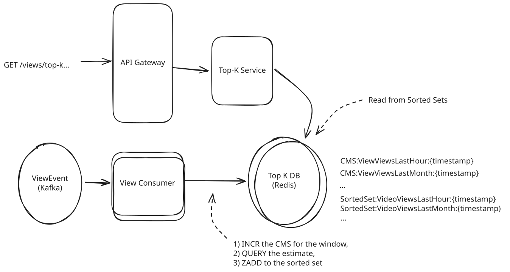
Redis CMS Top-K
Challenges
Durability becomes a concern when we introduce Redis. Because each view event is mutating our sketch, we risk situations where we can lose data if, for instance, a view event is added to our sketch but not updated in our sorted set. Rebuilding from Kafka is an option but it will be slow and while Redis' AOF gives us a way to recover from data loss, we don't have a good way to map it to Kafka offsets.
You might hand wave these a bit. We're approximating after all, who cares about losing a few views! But keep in mind that the simplicity of this solution is begging the interviewer to probe these type of details and force you to flesh out your design.
Approach
If we're using a Flink-based approach, the CMS and the sorted list can both be maintained in Flink's state management in memory (checkpointed by Flink to avoid losing state). This is just custom code we're writing into our job rather than additional infra we're deploying, so our diagram largely looks the same!
Flink CMS Top-K
If a node goes down, Flink allows us to restore from a checkpoint and replay our state from the events in the Kafka stream.
This approach is more resilient to failures than the Redis approach and more efficient because the data structure is kept in memory.
Challenges
Like earlier Flink-based solutions, this approach will require both that (a) your interviewer understands enough about Flink to understand the proposal, and (b) you're able to go into detail about how each of the pieces works at a lower level. Expect to spend some time talking about the job structure, how state is managed, etc.
These approaches both work really well for tumbling windows where we are only adding to the sketch during the window, but for sliding windows they fall short. With our sliding window approaches, we need to be removing the "old" views as we're adding the "new" ones.
Fortunately, there's a solution here. If we can guarantee that we're only decrementing items that we have previously incremented, CMS also allows us to remove items from the sketch with similar guarantees (Reference). This gives us one new API: remove which can't be done with the Redis approach (Redis doesn't support CMS.DECRBY), but can be done with a Flink-based approach or a custom in memory implementation.
This would be well outside the scope of expectations for an interview.
6) Is there room for a specialized database here?
Specialized databases — time-series (e.g., TimescaleDB, InfluxDB) and real-time OLAP (e.g., Druid, Pinot, ClickHouse) — are frequently brought up for analytics-heavy workloads. Problems like this one appear everywhere and calculating the top-K video views is one of the most primitive ones so it's natural that more specialized solutions exist.
These databases support time-based partitioning, retention, compression, materialized views, and rollups. But their underlying architectures actually can make a massive difference in how well the fit to this problem. I'm going to cover them here, but generally offer the guidance that, in your preparation, you're better off spending time understanding simpler primitives deeply and building a large toolkit of specialized solutions that you can't possible know well.
From an interview perspective, specialized databases run some similar risks that the Flink options above had in that interviewers may not be familiar with a specific technology or will want you to demonstrate a deeper understanding of how it works. Using a technology that you understand its use-case (this fits!), but not its underlying operation can be tricky as most interviewers are trained to probe for understanding.
In a general sense, you're better served by being able to construct solutions from simpler primitives than to defer to specialized tech that they may not be able to defend well. Most interviewers remember the first time they learn new tech X. They're more sympathetic if you understand what gave rise to X than if you just know its name.
Once you understand how things can be accomplished with primitives, it becomes much easier to understand whether these specialized solutions will work. Don't try to memorize that TimescaleDB isn't a good fit for TopK. Do understand that the high cardinality (i.e. we have billions of videoIds) is a core challenge for this problem that can be addressed with precomputation and caching.
Approach
Ingest view counts via Kafka and write per-minute points keyed by time with videoId as a series identifier or label into InfluxDB, and use tasks/continuous queries for downsampling (e.g., minute -> hour -> day). We can then query this with top() on aggregated counts to get K.
Challenges
This doesn't work! Because we have billions of distinct videoIds as tags/series, our top() queries are effectively performing scans. InfluxDB and Prometheus generally can't support this level of cardinality.
Conceptually think of it this way: InfluxDB gives us a really great way to query a single videoId at a time, but if we want to query all of them at once, we're going to have to scan the entire database making billions of calls at the same time.
Most high-scale time series databases are geared more toward writes and narrow queries than analytic workloads. So while InfluxDB and Prometheus are both great for surfacing the full time series data for an individual videoId (think: a graph), they're not a good fit for our problem which is trying to query across all the graphs.
Approach
While TimescaleDB is a time series database, it leans more toward analytics workloads and complex queries by design. TimescaleDB extends Postgres (what's not to love!) that basically allows us to have tables (called "hypertables") with some built-in time-based partitioning and time series features.
We can model per-hour aggregates as a hypertable partitioned by hour-grained time and videoId. We can even add an index on the views column to further improve performance of the query. For a given hour, we have the same sort of O(k) queries we had earlier. Pretty nice!
The problem with this is that the large window queries can't use those indexes! Imagine having 60 sorted lists of views, how do you get the top K from the sum of them. Fortunately, TimescaleDB gives us a solution that looks a lot like materialized views called "continuous aggregates"!
We can use continuous aggregates to maintain rollups for the last hour/day/month. These are just like our ViewViewsLastHour, VideoViewsLastDay, and VideoViewsLastMonth tables. We can put an index on the rollup tables’ views and serve queries with ORDER BY "views" DESC LIMIT {k}. Add retention/compression policies to keep only what you need.
Net/net: it looks a lot like our existing solution but using TimescaleDB's features and with a more efficient storage structure.
Challenges
To meet our SLAs, we're still going to need caching. The pre-aggregation isn't free, it still requires compute, and as such we'll be sharding out the database like we were previously.
Approach
The last approach is to use a real-time OLAP database. Ingest from Kafka, roll up per-minute by videoId, and query with topN/groupBy over a time filter. These all have a different way to do the same thing: pre-aggregate the data on ingest.
Each of these systems has a different approach to these pre-aggregations:
- Druid: Ingestion-time rollup groups by a time bucket (e.g., minute) and videoId, applying count aggregators so segments store pre-summed rows. Background compaction can re-rollup older data at coarser grains (hour/day) to speed long-window queries.
- Pinot: Star-tree indexes and materialized views pre-aggregate metrics, so for fixed patterns like top-K by videoId over a window, star-trees prune most data and serve GROUP BY ... ORDER BY ... LIMIT K quickly. You can also generate offline pre-aggregated segments (minute/hour/day) and query the right table per window.
- ClickHouse: Use Materialized VIEW → SummingMergeTree/AggregatingMergeTree tables to maintain per-minute/hour/day rollups on ingest. This just basically puts pressure on writes. Queries for fixed windows read the rolled-up table and do ORDER BY views DESC LIMIT K.
Challenges
Some of these systems can get flaky at scale in production (frankly, this is true of all systems at this scale!). Node outages and compaction can cause issues with us meeting query SLAs. If you end up using any of these systems in your design, you'll want to be prepared with a deeper understanding of how each step works. Your interviewer might say "Ok, I haven't used Druid before but I think I understand the concept. Walk me through the ingestion process." Be ready to get detailed and teach!
Note how closely the "good" TimescaleDB solution resembles our existing solution! This isn't a coincidence. When you're thinking deeply about how to structure your data, you'll find that the right system design is often the one that allows you to most easily express the ideal data flow.
What is Expected at Each Level?
Ok, that was a lot. You may be thinking, "how much of that is actually required from me in an interview?" Let's break it down.
Mid-level
Breadth vs. Depth: A mid-level candidate will be mostly focused on breadth (80% vs 20%). You should be able to craft a high-level design that meets the functional requirements you've defined, but many of the components will be abstractions with which you only have surface-level familiarity.
Probing the Basics: Your interviewer will spend some time probing the basics to confirm that you know what each component in your system does. For example, if you add an API Gateway, expect that they may ask you what it does and how it works (at a high level). In short, the interviewer is not taking anything for granted with respect to your knowledge.
Mixture of Driving and Taking the Backseat: You should drive the early stages of the interview in particular, but the interviewer doesn't expect that you are able to proactively recognize problems in your design with high precision. Because of this, it's reasonable that they will take over and drive the later stages of the interview while probing your design.
The Bar for Top K: For this question, an Mid-Level candidate will be able to come up with an end-to-end solution that probably isn't optimal. They'll have some insights into pinch points of the system and be able to solve some of them. They'll have familiarity with relevant technologies, but will make some mistakes.
Senior
Depth of Expertise: As a senior candidate, expectations shift towards more in-depth knowledge — about 60% breadth and 40% depth. This means you should be able to go into technical details in areas where you have hands-on experience. It's crucial that you demonstrate a deep understanding of key concepts and technologies relevant to the task at hand.
Advanced System Design: You should be familiar with advanced system design principles. You're thinking intuitively about data flow. You should be familiar with streaming vs batch processing and how to choose the right tool for the job. Your ability to navigate these advanced topics with confidence and clarity is key.
Articulating Architectural Decisions: You should be able to clearly articulate the pros and cons of different architectural choices, especially how they impact scalability, performance, and maintainability. You justify your decisions and explain the trade-offs involved in your design choices.
Problem-Solving and Proactivity: You should demonstrate strong problem-solving skills and a proactive approach. This includes anticipating potential challenges in your designs and suggesting improvements. You need to be adept at identifying and addressing bottlenecks, optimizing performance, and ensuring system reliability.
The Bar for Top K: For this question, a Senior candidate should be able to come up with an end-to-end solution that is near optimal. They'll identify most bottlenecks and proactively work to resolve them. They'll be familiar with relevant technologies and might even weigh the pros and cons of each, especially where they can lean on their own experience.
Staff+
Emphasis on Depth: As a staff+ candidate, the expectation is a deep dive into the nuances of system design — I'm looking for about 40% breadth and 60% depth in your understanding. This level is all about demonstrating that, while you may not have solved this particular problem before, you have solved enough problems in the real world to be able to confidently design a solution backed by your experience.
You should know which technologies to use, not just in theory but in practice, and be able to draw from your past experiences to explain how they'd be applied to solve specific problems effectively. The interviewer knows you know the small stuff (caches, key-value stores, etc) so you can breeze through that at a high level so you have time to get into what is interesting.
High Degree of Proactivity: At this level, an exceptional degree of proactivity is expected. You should be able to identify and solve issues independently, demonstrating a strong ability to recognize and address the core challenges in system design. This involves not just responding to problems as they arise but anticipating them and implementing preemptive solutions. Your interviewer should intervene only to focus, not to steer.
Practical Application of Technology: You should be well-versed in the practical application of various technologies. Your experience should guide the conversation, showing a clear understanding of how different tools and systems can be configured in real-world scenarios to meet specific requirements.
Complex Problem-Solving and Decision-Making: Your problem-solving skills should be top-notch. This means not only being able to tackle complex technical challenges but also making informed decisions that consider various factors such as scalability, performance, reliability, and maintenance.
Advanced System Design and Scalability: Your approach to system design should be advanced, focusing on scalability and reliability, especially under high load conditions. This includes a thorough understanding of distributed systems, load balancing, caching strategies, and other advanced concepts necessary for building robust, scalable systems.
The Bar for Top K: For a staff+ candidate, expectations are high regarding depth and quality of solutions, particularly for the complex scenarios discussed earlier. A staff candidate will expand to cover deep dives that we haven't enumerated and speak to various alternatives that they may not have time to go into. The big hallmark of a staff+ candidate is they can see the solution space clearly and speak to different options with clear judgement and confidence.
Test Your Knowledge
Answer the question below to find your gaps.
Question 1 of 15
Which of these techniques is fundamentally about splitting data across multiple servers so each one handles a fraction of the total?
1
Caching frequently accessed data in memory
2
Adding indexes to speed up queries
3
Compressing data to save space
4
Sharding (partitioning data across servers)